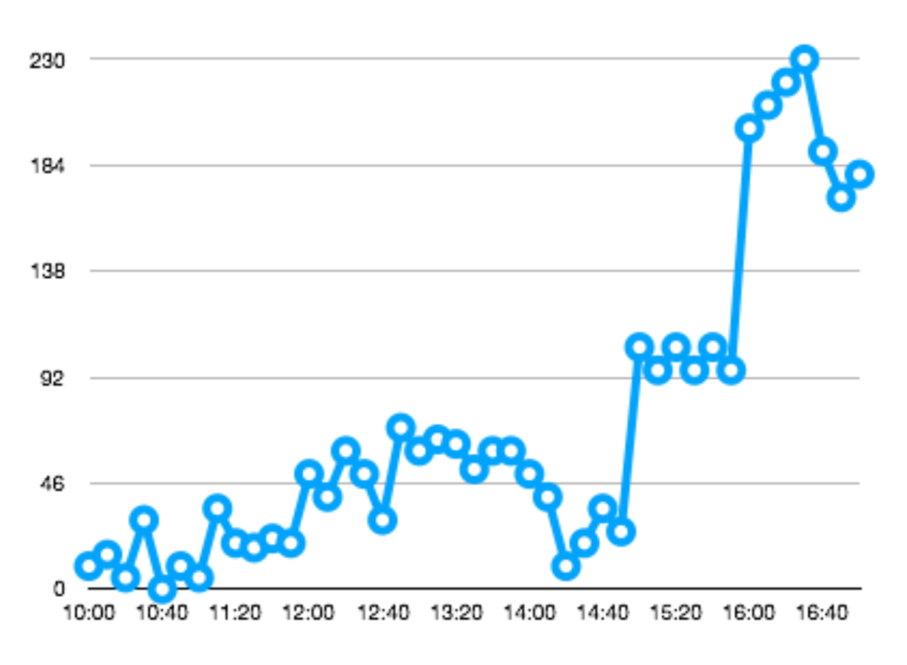
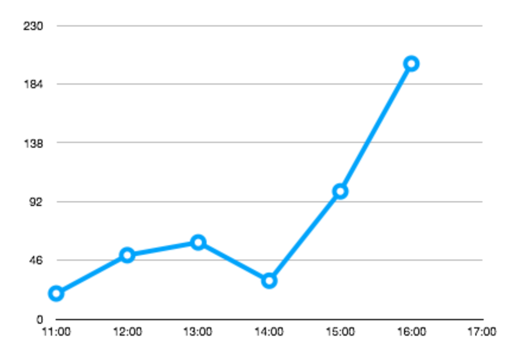

A time series is a series of data points indexed (or listed or graphed) in time order.
Most commonly, a time series is a sequence taken at successive equally-spaced points in time.
The traditional way:
Sorted Sets & Hashes
Streams
Enhanced queries: Labeling
sensor_id:2, cpu:8, area:5
Downsampling (compaction)
Enhanced queries: Aggregation
avg, sum, min, max, range, count, first, last
Each key is a time series
Each key can have any set of labels
Each key can have multiple downsampling rules
Each downsampling rule will write to a different key
TS.CREATE key [RETENTION retentionSecs] [LABELS field value]key: Key name for timeseries
retentionSecs: Maximum age for samples
labels: set of key-value pairs that represent metadata labels
TS.CREATE ts:2 RETENTION 0 LABELS sensor_id 2 type temperatureTS.ADD key timestamp valuetimestamp: epoch timestamp (in seconds) or * for automatic timestamp (using the system clock)
value: Sample numeric data value (double)
TS.ADD ts:2 1548149181 30
TS.ADD ts:2 * 30TS.CREATERULE sourceKey destKey AGGREGATION aggType bucketSizeSecondssourceKey: Key name for source time series
destKey: Key name for destination time series
aggType: Aggregation type: avg, sum, min, max, range, count, first, last
bucketSizeSeconds: Time bucket for aggregation in seconds
TS.DELETERULE sourceKey destKeyTS.CREATERULE ts:2 ts:avg:2 AGGREGATION avg 60
TS.DELETERULE ts:2 ts:avg:2Raw data

Downsampled and aggregated using average
